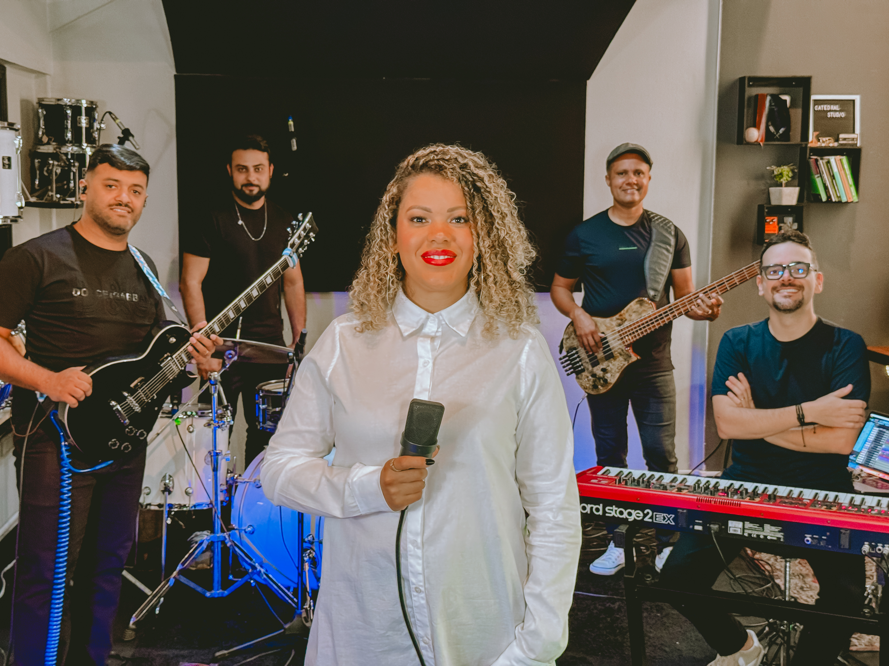
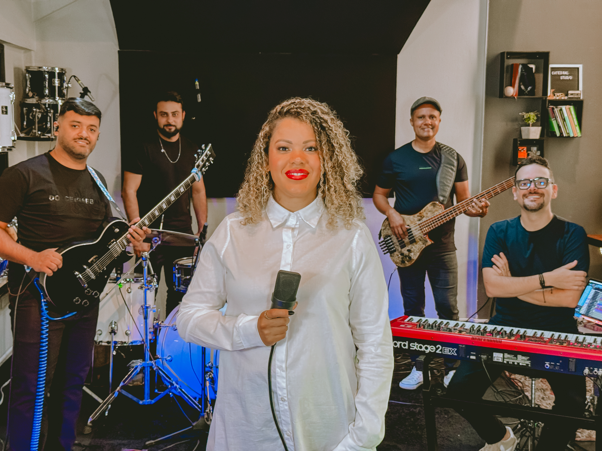

Joyce Basso é cantora, compositora e pastora na Power Church em Belo Horizonte.
Cantora desde pequena, Joyce começou sua trajetória gravando em estúdios e atuando como backing-vocal em diversos projetos.
Hoje, como pastora auxiliar na Power Church em Belo Horizonte — uma igreja relevante que tem alcançado e influenciado milhares de pessoas pelo Brasil.
Joyce segue firme em seu chamado, tocando profundamente o coração de quem a ouve.


Joyce Basso na Sua Cidade
Atendendo agendas para Igrejas e Prefeituras.

 
